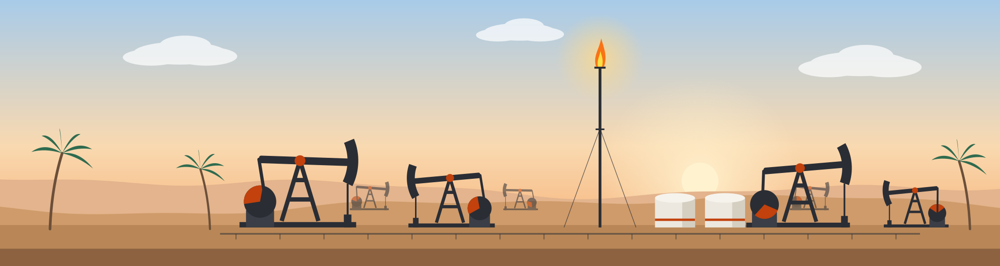

Miguel Enrique Lopez Gudiño
Senior petroleum engineer, Bogotá, Colombia
More than 37 years turning complex operating problems into results that are measurable, safe and profitable for oil and gas companies.
Where it started
My link with the oil industry began long before I stood on a rig. I grew up in Northwestern Venezuela, moving from town to town and city to city because my parents' jobs kept relocating the family.
On our trips to Zulia State, the heart of Venezuelan oil, I watched pumpjacks nodding and flares burning day and night. That image stayed with me. I studied Petroleum Engineering at Universidad del Zulia (LUZ) and graduated in 1989.
Growing up on the move gave me adaptability, resilience and an easy way with people from very different backgrounds. It is the base of how I lead in the field: I fit into any operation, learn the local dynamics and build trust from the wellsite crew to senior management.
Track record
I have led operations and projects across Latin America with one standard: comply strictly with what was agreed, then beat the targets. There is little room for error in this industry, so I combine close technical control in the field with a focus on efficiency and profit.
As a technical consultant and advisor, I help operators and oilfield service companies with key decisions. My strengths:
-
Execution and risk management
Well intervention procedures, early risk control and decisive leadership under pressure.
-
Service quality
Every phase of the work follows the service level agreements (SLAs) and what the client expects.
-

Efficiency and profit
Continuous improvement, better workflows and cost control to raise project margins.
-
Leadership and local talent
Leading field teams from several disciplines, training local people and planning succession so operations keep running.
At a glance
- Education
- Petroleum Engineering, Universidad del Zulia, 1989
- Languages
- English and Spanish, fluent. Portuguese, intermediate.
- Experience
- Since 1987
- Based in
- Bogotá, Colombia
Where I have worked